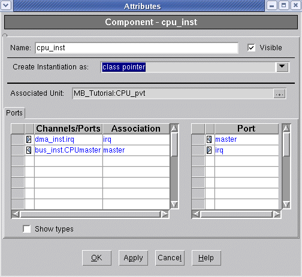
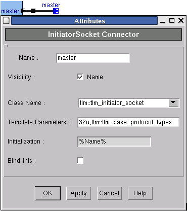
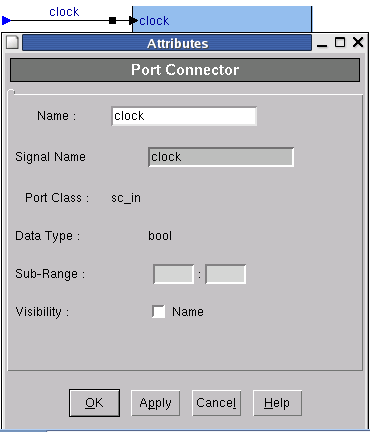
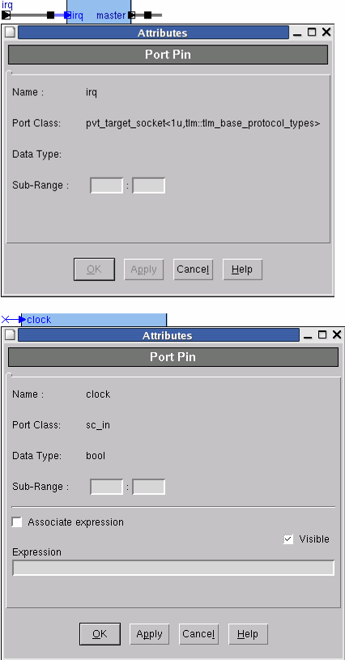
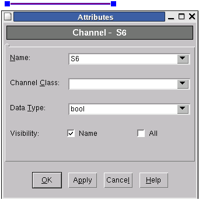
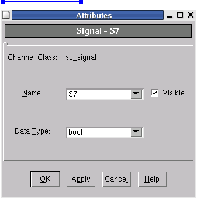

The Attribute Dialog
Each graphical object can be further refined using the Attribute dialog. Each object type has its own attributes that the you can configure to get your detailed design specifications.
Component Attributes
Figure 9‑2.
Component Attributes

The Component Attributes dialog enables you to specify the following:
- Name — Instance specific name of the design unit
- Visible — Indicates the visibility of the Instance name.
- Create Instantiation as — Select either “Class pointer” creating a pointer to the instance or “Class object” to create an object of the instance.
- Port Associations Table —
Port associations are specified in Ports tab of the a component Attributes dialog.
The Port Association table displays the bindings in the form of associations; for example:
- dma_inst.irq associated with irq socket
- bus_inst.CPUmaster associated with master socket
The association table shows the actual Initiator -> Target socket binding, or the channel that binds to the component port.
- Show types — Indicates whether to include the class type next to the Channel/Ports in the association table.
Initiator/Target Socket Connector Attributes
Figure 9‑3.
InitiatorSocket Connector Attributes Dialog

When a binder is selected in a SystemC design, the InitiatorSocket dialog enables you to specify the Socket Target and Socket Initiator mode parameters:
- Class Name — Defines the type of C++ class member of the SystemC module that appears in the generated SystemC module. You can:
- Select one of the standard TLM socket initiator/target classes.
- Type a user-defined class, derived from a standard socket initiator/target class.
- Template Parameters — If the option selected in the Class Name field is the C++ class/structure template, type the template parameters in this field.
- Initialization — Type the constructor parameters to use for initialization of the C++ class member. These parameters are defined for each given connector.
- Bind-this — Binds the selected connector to the parent SystemC module using the SystemC bind functionality.
Port Connector Attributes
Figure 9‑4.
Port Connector Dialog

The Port Connector dialog enables you to specify the following:
- Name — The name of the port/socket connector.
- Signal Name — The name of the signal or channel to which the connector is attached.
- Port Class — The name of the class, as defined for the port/socket
- Data Type — The data type class name of the channel
- Visibility — Indicates whether the name of the connector appears in the graphic diagram.
The appearance of a connector depends on the specified directionality.
Component Pin Attributes
Figure 9‑5.
Component Pin Attributes Dialogs

The Component Pin Attributes dialog displays the attributes of the selected pin (port) of a component. The dialog contains the following fields:
- Name — The name assigned to the pin.
- Port Class — The name of the class defined for the port/socket.
- Data Type— The data type class name of the channel.
- Expression fields (Ports only, not for Sockets) —
These fields enable you to associate a valid expression that is applicable to the instantiating unit of the selected pin.
Note that a pin associated with an expression cannot be connected to a signal in the block diagram. Conversely, a pin already connected to a signal cannot be associated with an expression.
- Associate expression — Indicates whether to associate an expression with the selected pin.
- Expression — The expression to be associated with the pin.
- Visible — Displays the associated expression in the block diagram.
Channel Attributes
Figure 9‑6.
Channel Attributes Dialog

The Channel Attributes dialog is used to assign attributes to a channel. The dialog contains the following fields:
- Name — The name of the channel.
- Channel Class — The class of the channel.
- Data Type — The type of data to be transmitted through the channel.
You can enter any of the standard C++ or SystemC types, or define your own types. Your types should be declared in one of the packages used by the unit.
- Name — Displays the channel object name in the block diagram
- All — Displays the channel class name and data type (template) class name in the block diagram
Signal Attributes
Figure 9‑7.
Signal Attributes Dialog

The Signal Attributes dialog is used to assign attributes to a SystemC signal created in a block diagram. The dialog contains the following fields:
- Channel Class — sc_signal
- Name — The name of the signal.
- Visible — Displays the signal name in the block diagram.
- Data Type — The data type class of the signal being defined.
You can select from the list of C++ and SystemC types, or manually enter a name of a type defined in a SystemC package. If you are defining a signal that is a vector type, specify its width using brackets < >; or example, sc_int<3>.
Line colors are assigned separately. Selecting the (…) option from the drop-down list opens a color table from which you can select a color to display in the Signal Attributes dialog. Click OK in the Signal Attributes dialog to assign the color(s) to the graphical object.